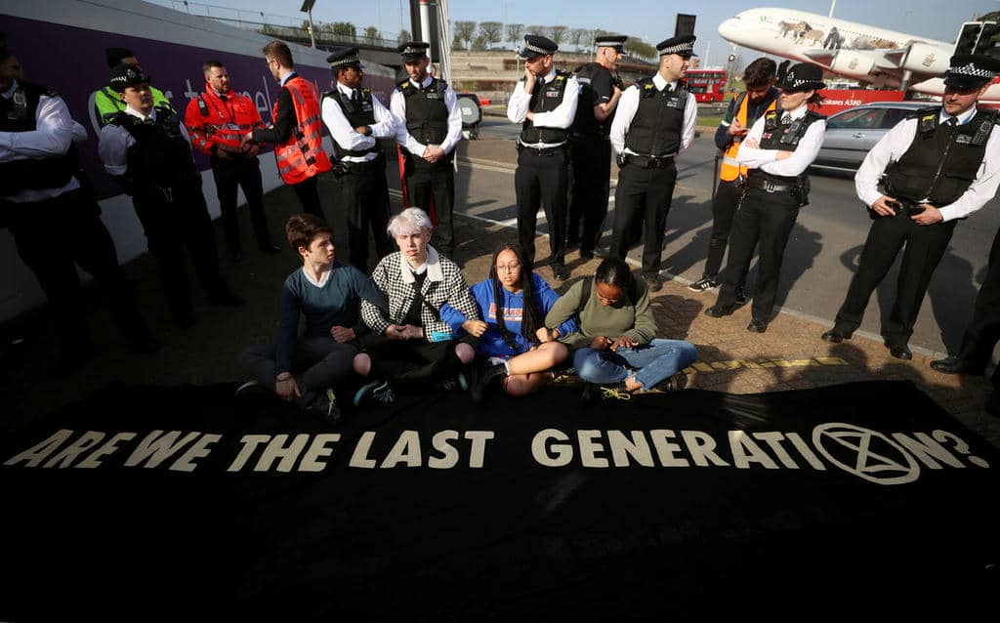
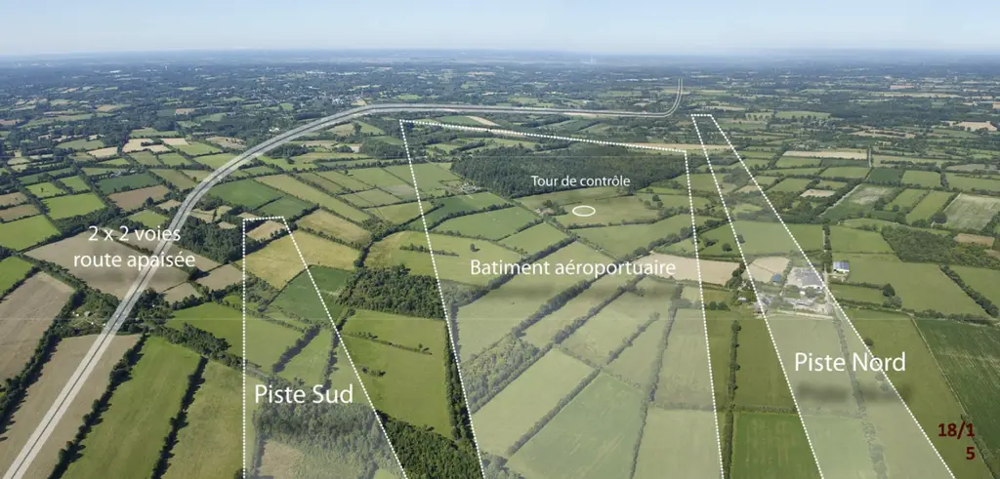
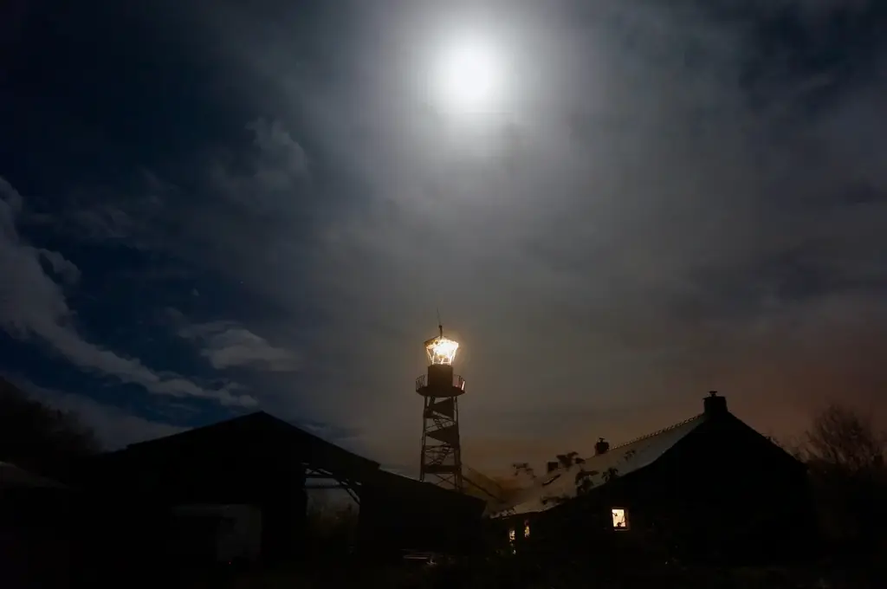
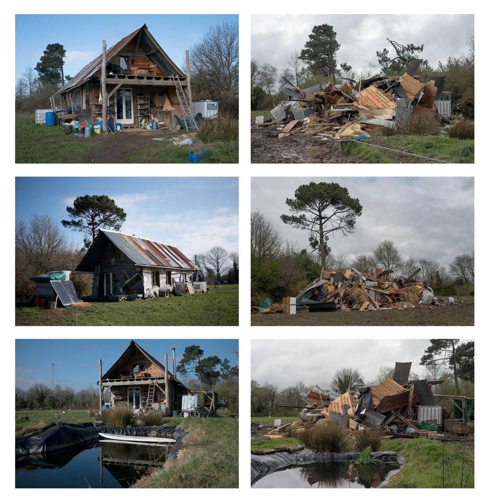
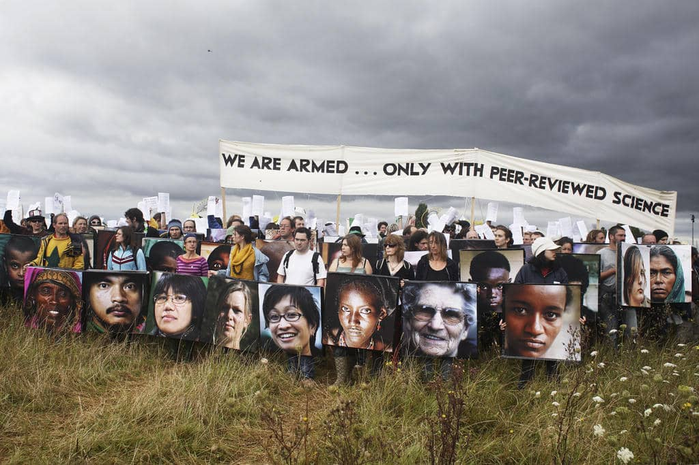
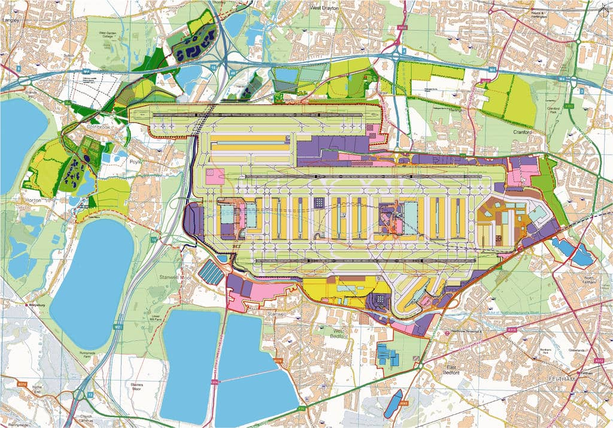
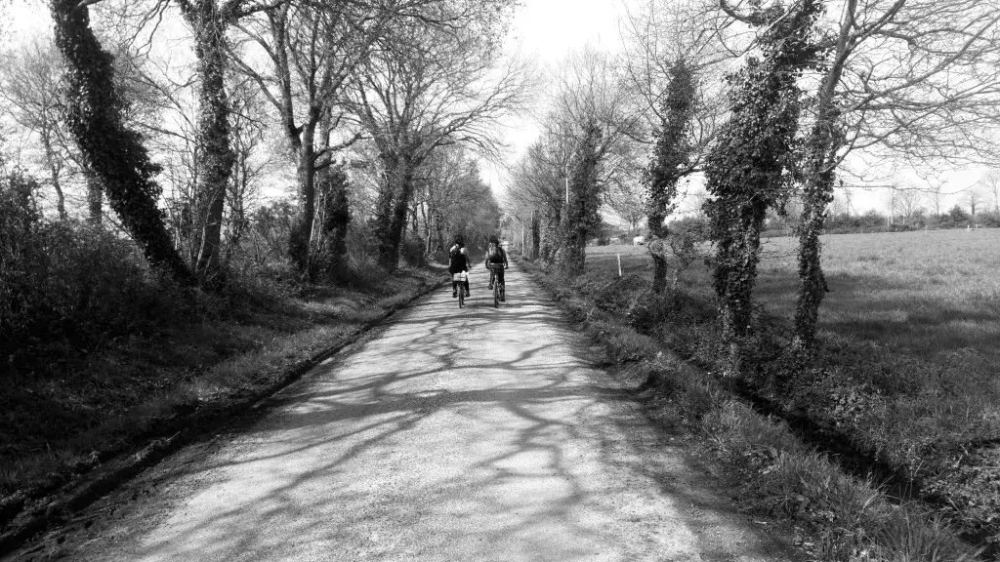

Dear rebels,
You just made history, there is no doubt about it. Yesterday the UK Parliament declared a climate emergency. You just nudged the world into the right direction with your disobedient bodies and beating hearts. Extinction Rebellion’s first demand has become a reality. You put your dreams and courage on display, splashed images across the world that showed that in an emergency, words are never enough. You proved, what fierce lover and rebel poet of everyday life Oscar Wilde, believed when he wrote: "Disobedience, in the eyes of anyone who has read history, is our original virtue. It is through disobedience that progress has been made, through disobedience and through rebellion."
I want to write to you about winning and how it often is not what we thought it would be. I know that post action feeling of victory, when every cell of your body is elated by the pleasure of disobedience. For the first time in your life you feel that this body, this flesh and bone that is me, can do something magical when it transforms the isolating anger and sadness, into a common rebel force. You realise that together we can change worlds.

But I also know the feeling when the system realises that your victories are a threat to its survival and it turns against you. I know that we are never prepared for the real repression when it comes. Sometimes it comes in the form of criminalisation through media storytelling, sometimes through the crack of truncheons on our skulls. But often it comes through the back door, an act of digestion and incorporation, transforming our radical actions into their own words, words that become tools for their greenwashing or electoral sloganeering. So this is a letter of warning but also a love letter, or rather a letter about love, about how perhaps one of the arts of being a rebel today is to fall in love with somewhere. To fall so strongly for a place that you would do everything to defend the life of it. It’s a call to truly inhabit !
As I was reading the news about the UK parliament declaring the state of climate emergency, my eye caught a headline further down the page in the ‘related news’ section: "Heathrow ruling: High Court approves third runway despite escalating climate change crisis." Local residents, Greenpeace and London’s Mayor had tried to block the building of the third runway, but the court ruled against them. The third runway could destroy 950 homes, acres of agricultural land and produce more CO2 each year than the entire country of Kenya.
And so, on the same day (which happens to be Mayday, the ancient festival of affirmation, the start of spring and a celebrating of the love of life) the state declares an emergency with one hand and with the other it fuels the very fire which is pushing life to the edge. Outside the court a Heathrow spokesperson said: "We are delighted with today's ruling, which is a further demonstration that the debate on Heathrow expansion has been had and won, not only in Parliament, but in the courts also." I feel sick reading this, he believes they have won, but he forgets that winning often happens in the streets and fields with bodies rather than words and paper. A full-length runway has not been built in London for 70 years, we can’t let this happen now, it would make the decades of resistance against this piece of climate burning infrastructure worthless and the growing climate rebellion a joke.

I am writing from an old farmhouse, my home which looks out across the meadows. The evening wind flutters the constellation of daisies and brushes against the edge of the forest, shivering a billion tiny bright green leaves bursting with new life. Spring is erupting everywhere. But all of this life unfolding in front of me would have been extinguished if it had not been for disobedient bodies, tens of thousands of them. If the French governments (50 years worth of them) had had their way, this forest would have become a tarmac runway, where my home is would have been a control tower decked with radars, and the rest of the 4000 acres of fields and rare wetlands around me would have become the Airport of Notre-Dame-des-Landes, the brand new international hub for the city of Nantes. A ‘green’ airport they claimed, with living roofs and solar panels, because there is never any limit to the hypocrisy of corporations and governments.
And so we won, the airport was cancelled in January 2018 ! A rich ecology of struggle had brought together local farmers and villagers, activists and naturalists, squatters and trade unionists, to defend this place. We occupied the territory and fell in love with it. We built a common life here, our cabins nestled into the rich hedgerows that criss-cross this land, the empty farms squatted and revived. We said "NO" we don’t want an airport, but also "YES" we will construct new forms of life, we will live as if we are free here and now and stop treating the world as an object to make money from, but as a subject to share life with. With its buckwheat fields and bakeries, brewery and banqueting hall, medicinal herb gardens and a rap studio, vegetable plots and library, weekly newspaper and flour mill, dairies and traditional carpentry school, the zad has become a concrete experiment in taking back control of everyday life. We’ve even built a lighthouse exactly where they wanted to put the control tower, a beacon to welcome hope.

Politicians called it "a territory lost to the republic", we called it - The zone to defend - the zad. Sometimes 60,000 people would block the local motorways, with hundreds of tractors, bikes, sound systems, dancing bodies and being France, giant banquets. Sometimes we would build barricades to repel the bulldozers come to destroy us. Our diversity was our weapon, non-violent direct action merged with confrontational tactics, burning barricades and singing old age pensioners worked hand in hand to confuse the police who came to try to evict us in 2012. The eviction failed and the 4000 acres of wetlands once earmarked to be sucked dry and concreted over, became an autonomous zone without police or politicians ever setting foot here. Popular assemblies of every shape and size ran the zone and it became Europe’s largest laboratory of commoning. That was until we won against the airport, and three months later the police came to try to evict the very people who had saved this place from destruction. It was pure revenge, because no government can allow an autonomous territory to exist and for people to show the world that we can live without them. Despite France’s biggest police operation since May 1968, with armoured cars, drones, helicopters, 4000 police firing over 11,000 tear gas and explosive grenades at us, the destruction of 40 of our homes and a bureaucratic attack to force us to legalise everything, most of us are still here and still fighting for the commons. (see this article « The revenge against the Commons » for more info .)

As I’m sure you know, the United Nations scientists tell us that we have 11 years to reduce our emissions. At my age, having been in direct action movements for a quarter of a century, 11 years passes very quickly. In fact 11 years ago, in 2007, I was with thousands of rebels occupying the very site of the third runway at Heathrow. We held the second climate camp there. It was extraordinary: the sea of tents, marquees, wind turbines and solar panels, a stark contrast against the backdrop of monstrous roaring planes taking off. This warm prefigurative temporary community made up of locals against the runway, whose houses were to be destroyed and radical climate activists from across the country and beyond, put the third runway on the global media map. BAA tried to impose a ban on us going to the camp, but it turned out that they had banned all members of all groups associated with the Climate Camp and one of the groups was the RSPB (Royal Society for the Protection of Birds) and as the Queen of England was its patron, she would be prevented from going to Heathrow airport for the duration of the Climate Camp ! The ban was ignored as were the terror laws the police tried throwing at us. We shut down British Airport Authorities HQ for over a day and hundreds experienced disobedience for the first time.

Heathrow Climate Camp action, with shields hiding pop up tents to block BAA with. 2007. Photo: Kristian BuusThree years later in 2010, the government cancelled the runway, we celebrated, the local residents could see a future again, the threat to their homes was over and another climate burning machine halted, we thought we had won. But in 2018 the government brought their runway back. The Labour party (despite the splits within it on this issue) allowed the vote to go through, under pressure from the construction unions. The plan is to have the first planes take off (over 700 flights a day) by 2025, the very year Extinction Rebellion are asking the government in their second demand to get to net zero CO2 emissions !
Whist we may feel now that the UK Climate Camp did not win at Heathrow in the end, its influence was key for the victory at the zad. The meadow I am looking out to here is where in 2009, inspired by the UK Climate Camps, the first French Climate Camp took place. During it local residents, some who had been resisting this project for 40 years already, read out an open letter they had written. It was an invitation: « a territory » they wrote "could only be defended if it was inhabited". It welcomed people to come and squat the empty farms and fields to block the airport builders. When the tents from the week long climate camp were taken down, a handful of rebels decided to stay, they built tree houses in the forest, occupied empty buildings and the zad was born. Nine years later when the airport was cancelled the zone would have over 300 people living on it in 70 different living collectives and communes. A permanent autonomous zone had blocked the infernal infrastructure.

I wonder how our bodies could stop the third runway, how can all that energy from Extinction Rebellion shift from the temporary sites of bridges and road blocks and start to take root, to defend a territory. How can our love of life become a love for a place ? The art of winning on the zad involved so many tactics from legal to illegal, but under each one of them lay the shared belief that the airport would never get built, it was an intense act of imagination aimed at envisioning a future without an airport. Is it possible to conjure up that rebel imagination against the third runway ?
Night is falling, the darkness is filled with the chorus of frogs croaking in the marshes. Thousands of them, singing serenades of love to each other, a sumptuous erotic symphony for these wonderful wetlands. I adore going to sleep cradled by the sound of amorous amphibians, but their song saddens me also, it reminds me of my mum, the rasping sound of her breathing, that croaking crackle of a death rattle, which I listened to 24 hours a day, as I held her dying body. Watching her body night after night, waiting for the breath to stop, waiting for the silence, which would mark her slipping away from this world, I wondered what the sound of the world dying would be. Before we won the struggle against the airport last year I often feared that one day there would no longer be the sound of frogs here but just the roar of jet engines.
Just as I write these last words a nightingale starts to sing. Its long low mesmerising notes yearning for love, interspersed with quick fire rattles and warbling whistles. Since I was born 54 years ago the population of nightingales has declined by 90% in the UK. For most of my life in a metropolis, I had never heard this magical sound. It was on this site of a proposed airport that I first heard it. I wonder who heard the last song of the nightingales on Harmondsworth moor, the rolling river crossed land next to the 400 year old village that is earmarked to make way for the third runway.
100 years ago Oscar Wilde believed in something that seemed totally impossible in his era, the idea that love between two people of the same sex could be seen as something normal. In one of his short stories a nightingale describes love: « Surely Love is a wonderful thing. It is more precious than emeralds, and dearer than fine opals. Pearls and pomegranates cannot buy it, nor is it set forth in the market-place. It may not be purchased of the merchants, nor can it be weighed out in the balance for gold. » Would it be ridiculous to believe that not only the third runway will never get built but that one day our children will be able to hear a nightingale in Harmondsworth again because we had learnt to fall in love with the world, in love with life rather than money.
Love, rage and gratitude from the zad.
JJ (John Jordan)
